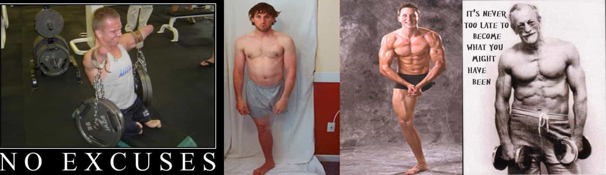

< < < Back
An Ode To The Resolutioners Who Are Making It – Return Of Kings
Resolutioners, as Urban Dictionary puts it, are;
…a new or rarely seen gym member who’s sudden appearance has undoubtedly been brought about by a personal resolution to “get in shape.”
The Resolutioner is viewed as somewhat of a nuisance by regular gym patrons because their commitment to fitness is often only temporary (usually fading within 2-8 weeks of initial sighting). In the mean time, the Resolutioner succeeds only in crowding up the gym’s limited floor space, sweating up the machines, and generally interfering with the workouts of more hardcore gym members.
Now, there’s enough hate out there for resolutioners by those in the fitness community and it’s pointless for me to add my contempt for those who join the gym and drop out after a short span – besides, others get the point across is far more hilariously entertaining ways.
What I’d like to do, in this so short it barely qualifies as an article and really is more of an ass kissing letter, is to congratulate those resolutioners who stuck to their personal resolutions of becoming fit. It takes an incredible amount of will power to not only get your butt into the gym but to keep it there regularly week after week and month after month.
We live in a society which increasingly wants us all to be mediocre and below average, so that those who refuse to rise up and become something better then they are won’t feel so pathetic for their piss poor life choices. But some men out there have nutted up and made the right choice for themselves.
I’ve been going to my gym since I first moved to this city in August, and sure enough it was a relative ghost town until January first when it filled up like a night club. By the time February rolled around it had dropped back to it’s normal, plenty of open space – but there were a few new faces in there which had shown up in January and stuck with it. Some have already made noticeable changes, and others are well on the right path. They’ve passed the two month point, having made it to March, and show no signs of slowing down.
It’s heart warming to see these guys who – in the words of the ever controversial Zyzz – are gonna make it. They’ve put their money down, got their ass in the gym and have joined the 10% rank of gym goers who actually stick with their new healthy lifestyle instead of quietly dropping out to cultivate their beer bellies and fat, cottage cheese thighs. I know a few guys who hate the idea of there being more fit or outright shredded men walking around – more competition for the ladies is essentially their reasoning – but I’m a very tribal minded guy. I want to live in a community of ripped brothers for whom leg day isn’t just an internet meme but an integral part of their life. I want to see fit bros everywhere I go. I want our society to stop being the laughing stalk of the world, where we’re more associated with McDonald’s and Stretch Pants then gyms and phenomenal physiques. It’s never been easier for someone to make the change into a physical Adonis, yet our society has never been fatter. It’s sounds narcissistic but nowadays just being in shape does make you better then those who aren’t. Don’t let anyone else tell you different.
Way back in October we had our magical Fat Shaming Week. My own contribution garnered me a lot of positive fan mail from fella’s who decided to make the change. One even sent me a progress pic. He’s made some amazing progress since October. It makes my day to run into fit folks or to see positive progress pics on fitness forums.
So for those of you men whom have made a commitment to excellent health and stuck to it, or have already been sticking to it for a long time; fuckin’ A. Keep doing what you’re doing and take pride in your positive lifestyle. Enjoy the mirin’ of jelly beer bellies, and keep on smiling condescendingly at all those dairy queens who deride you for being awesome enough to bang their fit sisters – even though those porkers desperately want to grind up on your swole self.
Keep lifting and lowering heavy stuff gents. Keep making our society a little less embarrassing. Keep being more then average. I wish all you the best and success for your body goals. You’re gonna make it.
And for those of you not already committed to a lifestyle of fitness, what are you waiting for? Why aren’t you trying to be the best person you possibly can be? What’s your excuse?

Read More: Thin Privilege Doesn’t Exist


{kind=link}
{kind=link}